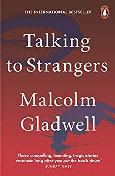
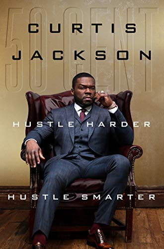
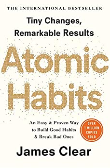
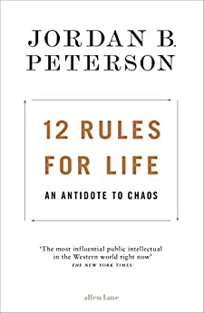

1. Can't Hurt Me: Master Your Mind and Defy the Odds
£4.99
For David Goggins, childhood was a nightmare -- poverty, prejudice, and physical abuse colored his days and haunted his nights.
But through self-discipline, mental toughness, and hard work, Goggins transformed himself from a depressed, overweight young man with no future into a U.S.
Armed Forces icon and one of the world's top endurance athletes. The only man in history to complete elite training as a Navy SEAL, Army Ranger, and Air Force Tactical Air Controller,
he went on to set records in numerous endurance events, inspiring Outside magazine to name him "The Fittest (Real) Man in America."
In Can't Hurt Me, he shares his astonishing life story and reveals that most of us tap into only 40% of our capabilities.
Goggins calls this The 40% Rule, and his story illuminates a path that anyone can follow to push past pain, demolish fear, and reach their full potential.

2. Talking to Strangers: What We Should Know about the People We Don’t
£6.99
Using stories of deceit and fatal errors to cast doubt on our strategies for dealing with the unknown,
Malcolm Gladwell takes us on an intellectual adventure into the darker side of human nature,
where strangers are never simple and misreading them can have disastrous consequences.

3. Hustle Harder, Hustle Smarter
£11.99
In his early twenties Curtis Jackson, known as 50 Cent rose to the heights of fame and power in
the cutthroat music business. A decade ago the multi-platinum selling rap artist decided to pivot.
His ability to adapt to change was demonstrated when he became the executive producer and star of Power,
a high-octane, gripping crime drama centered around a drug kingpin’s family.
Now, in his most personal book, Jackson shakes up the self-help category with his unique, cutting-edge
lessons and hard-earned advice on embracing change. Where The 50th Law tells readers “fear nothing and
you shall succeed,” Hustle Harder, Hustle Smarter builds on this message, combining it with Jackson’s
street smarts and hard-learned corporate savvy to help readers successfully achieve their own comeback—and
to learn to flow with the changes that disrupt their own lives.

4. Atomic Habits: the life-changing million-copy
£5.99
In this ground-breaking book, Clears reveals exactly how these minuscule changes can grow into such life-altering outcomes.
He uncovers a handful of simple life hacks (the forgotten art of Habit Stacking, the unexpected power of the Two Minute Rule,
or the trick to entering the Goldilocks Zone), and delves into cutting-edge psychology and neuroscience to explain why they matter.
Along the way, he tells inspiring stories of Olympic gold medalists, leading CEOs, and distinguished scientists who have used the
science of tiny habits to stay productive, motivated, and happy.

5. 12 Rules for Life: An Antidote to Chaos
£4.99
In this book, he provides twelve profound and practical principles for how to live a meaningful life,
from setting your house in order before criticising others to comparing yourself to who you were yesterday,
not someone else today. Happiness is a pointless goal, he shows us. Instead we must search for meaning,
not for its own sake, but as a defence against the suffering that is intrinsic to our existence.